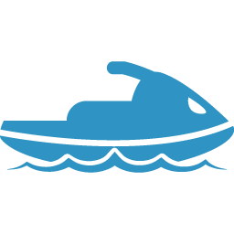
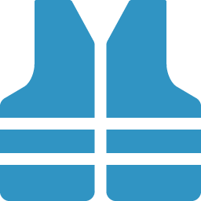
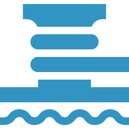
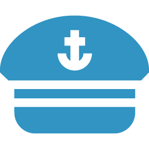

Curso de Patrón de Embarcaciones de Recreo PER
Para la realización del título de Patrón/ona de Embarcaciones de Recreo NO es necesario haber realizado antes el título de Patrón/ona de Navegación Básica ya que ambas titulaciones comienzan desde cero.
El título de Patrón/ona de Embarcaciones de Recreo es la segunda de las cuatro titulaciones oficiales para poder tripular embarcaciones de recreo. Esta habilita para navegar con embarcaciones que tengan las siguientes características:

Eslora máxima
de 15 metros
Sin límite de potencia
de motor

Motos náuticas de todo tipo
durante el día
Alejamiento máximo de la
costa de 12 millas náuticas

Navegación diurna
y nocturna
Válido fuera
de España
¿Qué necesitas?
Para la obtención del título, es necesario cumplir con los siguientes requisitos:

Haber cumplido los
18 años de edad
Aprobar un examen
teórico

Realizar 8 horas de curso de
radio-operador de corto alcance

Realizar 16 horas de prácticas
de navegación y seguridad

Certificado Médico
Oficial
Realizar 16 horas de prácticas
de vela (Opcional)
Examen teórico
El examen teórico para la obtención del título de Patrón/ona de Embarcaciones de Recreo (PER) consta de 45 preguntas tipo test de formulación independiente entre sí, con cuatro posibles respuestas cada una, sin opción multirespuesta. La duración del examen es de 90 minutos. El temario del examen es el siguiente:

NOMENCLATURA NÁUTICA
4 preguntas
AMARRE Y FONDEO
2 preguntas

SEGURIDAD
4 preguntas
LEGISLACIÓN
2 preguntas

BALIZAMIENTO
5 preguntas (máx. 2 fallos)

REGLAMENTO (RIPA)
10 preguntas (máx. 5 fallos)

MANIOBRA
2 preguntas
EMERGENCIAS EN LA MAR
3 preguntas
METEOROLOGÍA
4 preguntas

TEORÍA DE LA NAVEGACIÓN
5 preguntas
CARTA DE NAVEGACIÓN
4 preguntas (máx. 2 fallos)
Para que un candidato sea considerado apto debe contestar correctamente al menos 32 preguntas. En los temas 5, 6 y 11 no pueden fallar más de 2, 5 y 2 preguntas respectivamente, si no será considerado no apto.
El candidato deberá llevar al examen un lápiz, goma, compás, transportador de ángulos, regla, escuadra o cartabón, calculadora no programable ni programada, anuario de mareas de la Escuela de Capacitación Náuticopesquera de Cataluña (ECNPC) y un bolígrafo o rotulador de tinta negra, en ningún caso plumas o bolígrafos de tinta líquida.
El máximo número de fallos permitidos en el conjunto del examen es de 13.
¡ES IMPRESCINDIBLE Y OBLIGATORIO PRESENTAR EL DNI, NIE O PASAPORTE EL DÍA DEL EXAMEN!
Prácticas de Radio - operador de corto alcance
Las Prácticas de Radio-operador de corto alcance para la obtención del título de Patrón/ona de Embarcaciones de Recreo (PER) constan de 8 horas. El programa de prácticas es el siguiente:
- Conocimiento general de las radiocomunicaciones al Servicio Móvil Marítimo.
- Conocimientos y habilidades para usar los equipos radioeléctricos de un barco.
- Procedimientos de explotación del Sistema Mundial de Socorro y Seguridad Marítimos (SMSSM) y utilización práctica detallada de los subsistemas y equipos del SMSSM.
- Procedimientos de explotación y reglamentación de las comunicaciones radiotelefónicas.
Prácticas de Navegación y Seguridad
Las Prácticas de Navegación y Seguridad para la obtención del título de Patrón/ona de Embarcaciones de Recreo (PER) constan de 16 horas. El programa de prácticas es el siguiente:
- Seguridad y comprobaciones antes de salir a la mar. Conocimiento y manejo del material de seguridad, revisión de los puntos críticos de la embarcación y comprobaciones previas a la salida.
- Planificación de la derrota y lucha contra incendios. Planificación de la derrota: identificación de la zona a navegar, estado y capacidad de la tripulación e interpretación de las previsiones meteorológicas. Cuestiones de lucha contra incendios.
- Motores e instalación eléctrica. Identificación de los elementos de la instalación propulsora y de la instalación eléctrica. Encendido del motor y comprobaciones de funcionamiento.
- Mantenimiento de la embarcación, prevención de la contaminación y cordaje. Mantenimiento de la embarcación y de sus elementos. Precauciones en función del material de la embarcación. Antiincrustantes en función del material de la embarcación. Antiincrustantes. Prevención de la contaminación marina. Manejo de cabos y nudos básicos.
- Maniobras. Maniobras en puerto, atraques y desatraques. Velocidad de seguridad.
- Fondeo, vigilancia y control de la derrota. Maniobra de fondeo y control del rumbo y las reglas del RIPA. Identificación de marcas y balizas. Rumbo inverso y precauciones en la navegación nocturna y con visibilidad limitada.
- Navegación. Aspectos prácticos de navegación, como la determinación de la corrección total por enfilaciones, la situación por demoras, enfilaciones y equipos Global Navigation Satellite System (GNSS), así como por estimación gráfica. Uso de la sonda y la corredera. Posicionamiento rápido a la carta. Reconocimiento de la costa, demoras y límites de seguridad.
- Maniobras de seguridad. Maniobra de hombre al agua usando la función Man Over Board (MOB) del equipo GNSS; seguridad en las maniobras de remolque. Se tendrán en cuenta también las precauciones en el rescate desde la embarcación y con helicópteros.
Certificado Médico Oficial
A la hora de la expedición de cualquier título náutico, es necesario realizar una revisión médica y presentar el correspondiente Certificado Médico oficial. Esta revisión se puede hacer en la mayoría de centros médicos homologados para las revisiones médicas de carné de conducir, de armas o deportivos.
Aquellas personas que hayan expedido o renovado una titulación náutica en un plazo menor de dos años estarán exentas de presentar el certificado médico oficial.
¿Qué incluye el curso PER?
Los siguientes puntos se incluyen en el precio del curso PER:
- 18 horas de clases teóricas en nuestras instalaciones (16 horas de PER + 2 horas gratis para resolver cualquier tipo de duda, repaso de partes más complicadas, etc).
- Libro PER completo en papel y adaptado a todo el plan de estudios de la Generalitat.
- Presentación completa en Power Point con más de 300 imágenes detalladas y explicativas. Dicha presentación también será mostrada durante las clases ya que el aula cuenta con un proyector.
- Anuario de mareas.
- Material náutico (transportador de ángulos, cartas náuticas, etc.) para la realización de los ejercicios en cartas náuticas.
- Atención personalizada vía email, whatsapp y teléfono durante los días de clase y días posteriores siendo más importantes los días previos al examen teórico.
- Exámenes oficiales PER de otras convocatorias donde el alumno podrá practicar todo lo que quiera y necesite.
- 1 convocatoria a examen teórico (su precio es de 75 euros pero la primera convocatoria la asumimos nosotros).
- Prácticas de radio de 8 horas en un centro náutico profesional.
- Prácticas de navegación a motor de 16 horas en barco saliendo de un puerto en Barcelona o Badalona.
¿Qué NO incluye el curso?
Los siguientes puntos NO se incluyen en el precio del curso PER:
- Certificado médico. Su precio es de 50 euros pero On Board BCN Academy tiene aprobado un convenio con un centro médico con un precio final de 38 euros.
- Expedición de título. Una vez finalizado todo, el alumno deberá expedir su titulación ante la Generalitat de Catalunya pagando una tasa.
El precio es de 525 euros
Si traes una persona contigo tendréis un 10% de descuento cada uno
Clases particulares de PER
Si estás a punto de realizar el examen teórico oficial para la titulación de Patrón de Embarcaciones de Recreo (PER) y tienes dudas tanto teóricas como de navegación por carta, disponemos de clases particulares donde el alumno que las necesite saldrá con todas las dudas y preguntas totalmente resueltas dando una mayor confianza para su examen teórico oficial.
Habilitación a Vela para PER
Si deseas obtener la habilitación a vela para Patrón de Embarcaciones de Recreo (PER), es necesario que realices 16 horas de prácticas específicas de navegación a vela y donde no habrá ningún tipo de examen.
La habilitación a vela es totalmente voluntaria y se requiere únicamente si deseas navegar con una embarcación a vela ya que en el momento de realizar uno de los cuatro títulos oficiales solo te habilita a navegar a motor.
Las prácticas a vela se pueden realizar entre semana siendo 4 salidas de 4 horas al día o en fin de semana siendo 8 horas al día y parando para comer durante 1 hora.
Habilitación a Islas Baleares para PER
Si ya dispones del título oficial de Patrón de Embarcaciones de Recreo (PER) y deseas aumentar tus atribuciones puedes obtener la habilitación a Islas Baleares donde podrás aumentar tu eslora de 15 metros a 24 metros y navegar entre la península española y las Islas Baleares realizando unas prácticas adicionales de 24 horas en travesía. La habilitación a Islas Baleares es totalmente voluntaria y no se requiere ningún tipo de examen.
Habilitación a Vela + Islas Baleares para PER
Si ya dispones del título oficial de Patrón de Embarcaciones de Recreo (PER) y deseas aumentar tus atribuciones puedes obtener la habilitación a Islas Baleares donde podrás aumentar tu eslora de 15 metros a 24 metros y navegar entre la península española y las Islas Baleares y además podrás obtener la habilitación de navegación a vela realizando unas prácticas adicionales de 48 horas en travesía. Tanto la habilitación a Islas Baleares como la habilitación a vela son totalmente voluntarias y no se requiere ningún tipo de examen.
Inscripción al Examen Teórico Presencial PER
Por solo 20 euros, el personal de ON BOARD BCN ACADEMY se encargará personalmente de inscribirte al examen teórico presencial para Patrón de Embarcaciones de Recreo (PER). Una vez inscrito, te enviaremos la carta de pago para que puedas pagar la tasa del examen a través de tu banco.
Además, te informaremos sobre:
- Día, turno y hora del examen.
- Lugar, piso y aula.
- Listado de admitidos.
- Y te enviaremos todos los exámenes oficiales de las últimas convocatorias de los últimos años en Cataluña para que puedas estudiar según el plan de estudios oficial.